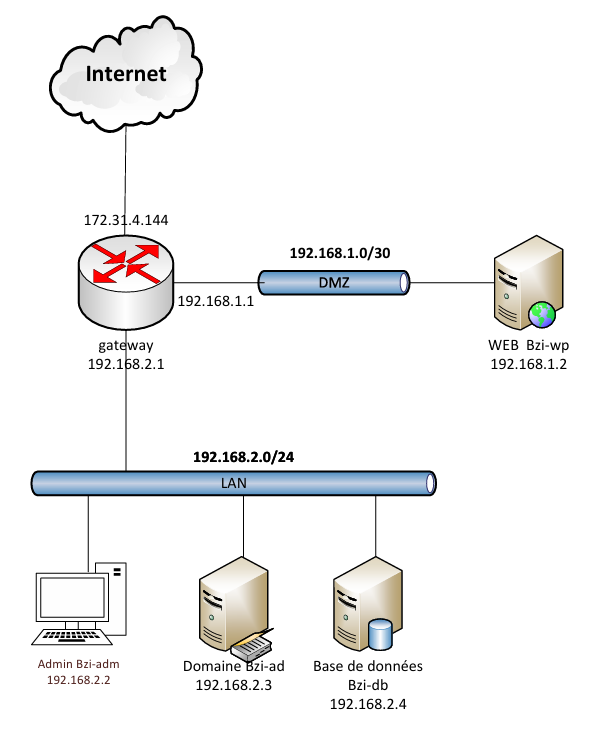

Contexte & Objectif
Le projet Alpy consiste à concevoir et déployer une infrastructure réseau sécurisée et segmentée afin d'héberger un site web public WordPress tout en protégeant les données sensibles et les ressources d'administration interne.
Pour répondre aux exigences de sécurité industrielles, l'architecture sépare les flux publics et privés en isolant le serveur web dans une DMZ et le serveur de base de données dans le LAN. L'accès externe est filtré et redirigé par un pare-feu pfSense, limitant l'exposition aux attaques.
Schéma de l'infrastructure

Plan d'adressage réseau
L'infrastructure est segmentée en trois zones distinctes gérées par le pare-feu pfSense :
- WAN (Internet) : IP attribuée par DHCP (ex: 172.31.4.144) - Interface
em0 - DMZ (Zone Démilitarisée) : Réseau
192.168.1.0/30— Passerelle192.168.1.1- Interfaceem2 - LAN (Réseau Interne) : Réseau
192.168.2.0/24— Passerelle192.168.2.1- Interfaceem1
Composants & Services
Web Server (Debian)
- Nom : B2i-wp
- IP : 192.168.1.2/30 (DMZ)
- Passerelle : 192.168.1.1
- Services : Nginx, PHP-FPM, phpMyAdmin, WordPress
Database Server (Debian)
- Nom : Bzi-db
- IP : 192.168.2.4/24 (LAN)
- Passerelle : 192.168.2.1
- Services : MariaDB Server (écoute sur 0.0.0.0, base de données 'wordpress' et utilisateur dédié)
Admin PC (Windows 11)
- Nom : bzi-adm
- IP : 192.168.2.2/24 (LAN)
- DNS : 192.168.2.3
- Services : RDP (Bureau à distance) activé pour la gestion centralisée
Sécurité & Filtrage (pfSense)
Des règles strictes ont été configurées sur pfSense pour assurer le cloisonnement des zones :
- Flux LAN vers TOUT : Autorisation complète du trafic sortant depuis le réseau interne vers Internet et la DMZ pour l'administration et les mises à jour.
- Flux DMZ vers WAN uniquement : Restriction stricte autorisant uniquement les ports HTTP/HTTPS vers Internet. Tout le reste est bloqué. **La DMZ n'a aucun accès vers le LAN**.
- NAT & Port Forward : Redirection du trafic HTTP/HTTPS entrant sur l'interface WAN vers le serveur WordPress en DMZ (`192.168.1.2`).
Conclusion
Ce projet met en évidence les meilleures pratiques en matière de conception réseau sécurisée : la séparation physique et logique des applications web et de leurs données (multi-tiers), l'application du principe du moindre privilège via les règles du pare-feu pfSense, et l'administration centralisée sécurisée.